Películas favoritas
26 de Septiembre, 2025
Películas favoritas
Me preguntabas cuál es mi película favorita, pero es que son varias las películas que me gustan tanto, que a todas las
podría considerar mis favoritas. Es imposible que elija solo una. Así que te hablaré de todas las que me
gustan. El orden en el que las menciono no tiene relación con su importancia o nivel de gusto.
Me gustaría empezar con sagas completas. La primera que me viene a la mente es Volver al Futuro. Tal vez
no sea perfecta pero es una de las que mas disfruto ver. Y no puedo elegir una sóla, tengo que ver la trilogía
completa.
 Dato curioso: En algún video de YouTube escuché que los realizadores de esa trilogía (Spilberg y Zemeckis) se niegan
rotundamente a hacer una continuación, precuela o remake, porque consideran que les quedó tan bien que
no necesitan moverle nada más.
Dato curioso: En algún video de YouTube escuché que los realizadores de esa trilogía (Spilberg y Zemeckis) se niegan
rotundamente a hacer una continuación, precuela o remake, porque consideran que les quedó tan bien que
no necesitan moverle nada más.
La otra trilogía que me gusta bastante es la de precuelas de Star Wars (episodios 1, 2 y 3). Y aunque sé que muchos las odian, creo que el hecho de que soy de la generacion que le tocó verlas en el cine, me hace apreciarlas más. También me gustan las de la trilogía original (episodios 4, 5 y 6), pero la verdad esas me daban sueño cuando las pasaban en la tele, jeje.

La trilogía del Señor de los Anillos también es bastante buena. Solo que admito que sí es un poco densa, por lo mismo de que tiene una mitología muy rica y un mundo gigantesco muy variado, el querer meter todo eso en las películas, las hizo muy largas y pesadas de ver para algunos espectadores. Pero tanto la historia como la calidad de las adaptaciones al cine son de lo mejor que he visto.

Hay un par de películas que me gustaría incluir aquí aunque no sean una trilogía. Las primeras dos de
Terminator son de lo mejor que he visto en cine de acción ochentero o noventero. También las consideraría parte de mis favoritas.

Otras dos que no son trilogía pero que sí son de las que más disfruto son las de los Cazafantasmas 1 y 2.
Aunque son algo distintas una de otra, la primera tiene un humor como que más para adultos y la segunda parece
estar hecha más para niños. De hecho para mí, el videjuego (que me regalaste en Steam) sigue siendo como la tercera parte
de esa historia. Las nuevas películas ya no tomaron en cuenta la trama del videojuego pero estuvieron bien también. Aún así,
me sigo quedando con las primeras dos.
 NOTA: A pesar de mi gusto por las películas, sigo disfrutando mucho más la serie animada
de los Cazafantasmas. Abordaré el tema cuando hable de series.
NOTA: A pesar de mi gusto por las películas, sigo disfrutando mucho más la serie animada
de los Cazafantasmas. Abordaré el tema cuando hable de series.

Una situación muy parecida me pasa con las Tortugas Ninja, ya que me gustan mucho las primeras dos películas
(más la primera), pero no me llama la atención la tercera ni las nuevas que han hecho que se
ven horribles. Respecto a la caricatura, esa de plano no me gusta tanto. Era chistosa pero algo boba.

Y pues ya dejando de lado las películas que forman sagas o trilogías, hay muchas películas que
podría considerar mis favoritas, ya que soy capás de veras una y otra vez, casi sin cansarme.
Empezando por las de Studio Ghibli, esas películas de verdad que son obras maestras. Las que más me han
gustado son:
El viaje de Chihiro: Es la primera que vi del estudio y quedé maravillado por la calidad de sus dibujos
y por lo atrapantes que son sus historias, a pesar de ser medio extrañas. Algo tienen esas
películas que me hacen sentir bien, me transmiten una sensación de calma.
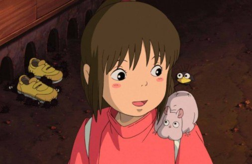
Mi vecino Totoro: Es una de las películas mas tiernas y a las vez sencillas a nivel narrativo que he visto. Pero está tan bien hecha, que en ningun momento se me hace aburrida. Me hace desear vivir en una casa de campo como la de los protagonistas.
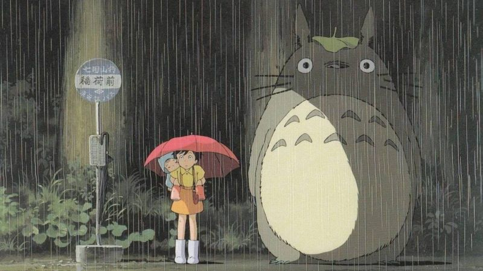
Porco Rosso: Aunque es un poco extraña, me cae super bien el protagonista. Y me gusta que su mensaje, como en la mayoría de las películas de Miyasaki es anti bélico. Me gusta mucho ver esa película.
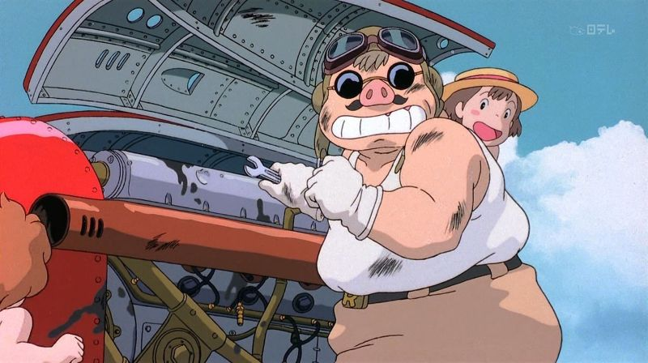
Voy a continuar con películas que llegaron a mi lista de favoritas por la tremenda carga emocional que me dejaron al verlas. Dicen que para que algo se considere arte, debe hacer sentir algo al espectador. Y estas películas me movieron los sentimientos, casi como si yo hubiera vivido esas historias. De hecho todas me hacen llorar irremediablemente. A pesar de haberlas visto una y otra vez.
Hachiko: Aunque no me gusta tener mascotas, esta película me conmueve mucho. Refleja lo que pasa cuando una persona crea un vinculo muy especial con su mascota. Los animales así suelen ser muy nobles y muy fieles.
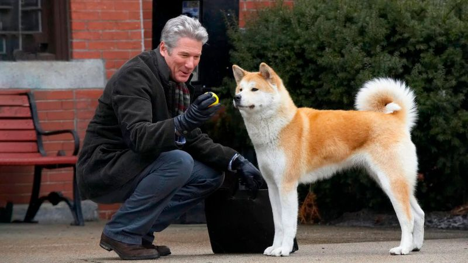
Milagros inesperados: Es una de esas películas que disfruto tanto que no se me hacen pesadas las tres horas que dura. Toda la historia de principio a fin es muy interesante y sobre todo, muy conmovedora.
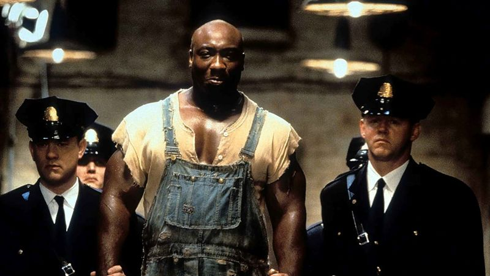
Que bello es vivir: Este drama navideño de 1946 me hizo pensar mucho sobre cómo nuestras acciones por muy insignificantes que parezcan, pueden cambiar la vida de todos los que nos rodean. Te la recomiendo mucho si no la haz visto.
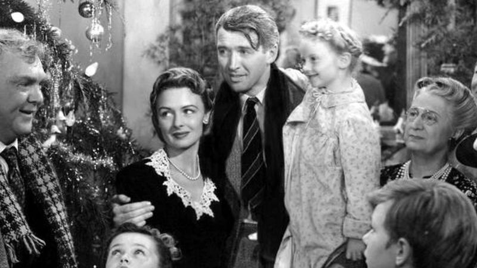
Milagro en la celda 7: Me refiero a la version original, la Coreana del año 2013, no al remake turco. Es la película mas desgarradora que he visto y por mucho. Me conmovió demasiado. Durante las escenas finales, o sea las más dramáticas, no puedo evitar chillar como nena. 🤣
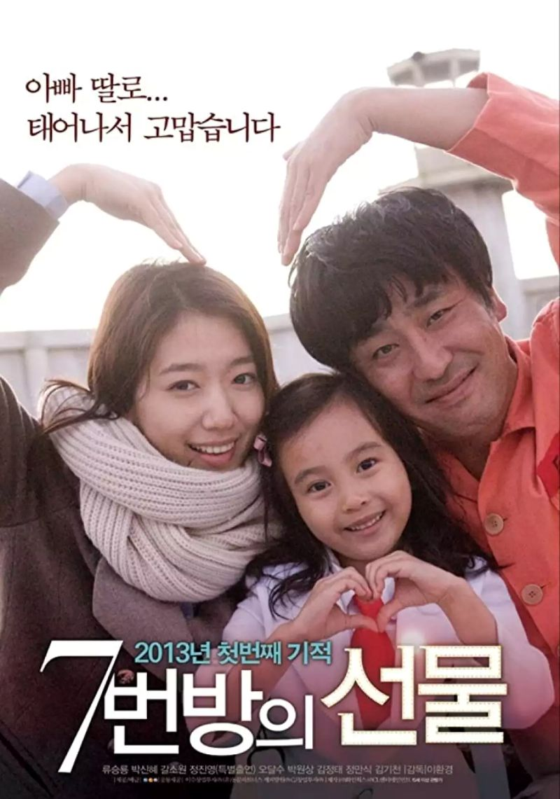
Harry Potter: Aunque te sorprenda, no soy fan de toda la saga. Sólo me gustan las primeras tres películas, y de esas sólo puedo considerar mi favorita la primera. Las otras dos ya se me hacen algo aburridas, y ni se diga del resto de la saga. Además de que me caía mucho mejor el director Dumbledore cuando era interpretado por Richard Harris, le daba una personalidad mucho más amable, sabia, hasta graciosa, en fin, era más simpatico.
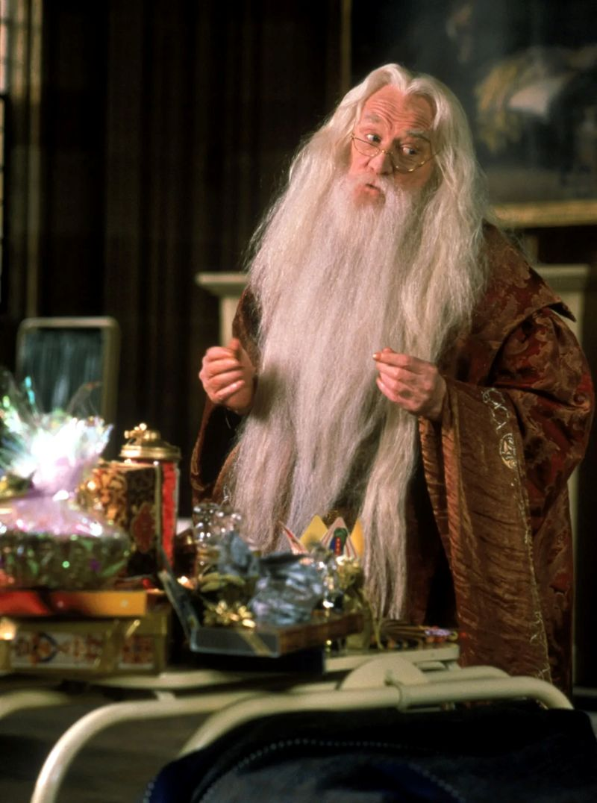
Top Gun Maverick: No sé si sea mi gusto por los aviones, pero esta película me encantó. En alguna ocasión ya te conté que la primera aunque me había gustado, se me hacía más un drama disfrazado de película de aviones, había unas partes muy aburridas la verdad. Pero esta no tiene ningún desperdicio, es una buena película de acción, con una historia sencilla, sin muchas pretenciones.
Entre navajas y secretos: Disfruté mucho de esta película de corte detectivesco. Está bastante entretenida y muy bien armada. Los personajes principales tienen mucho carisma. Lástima que su secuela ya no estuvo tan buena.
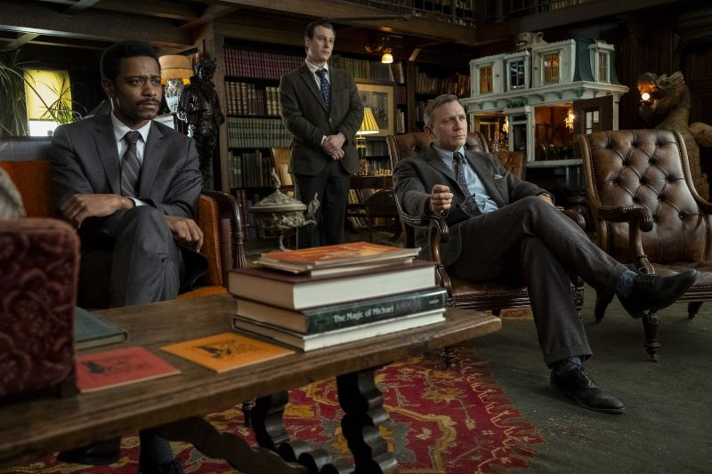
Your Name: Esta película de anime me pareció muy original. La historia es bastante interesante y está muy bien contada. La animación es de lo mejor que he visto en anime. Y la banda sonora es excelente. Esta es una de las películas que sin ser especialemnte dramática, me dejó un nudo en la garganta al final.
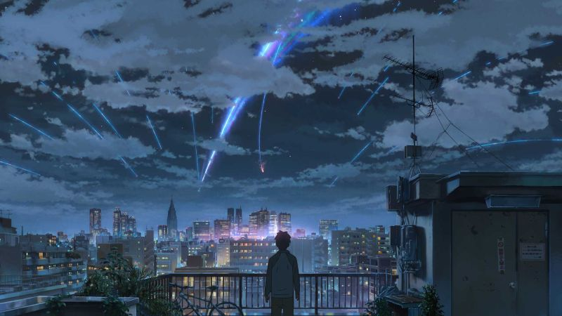
Lincoln: Esta película narra la historia de cómo el expresidente Abraham Lincoln luchó por abolir la esclavitud en Estados Unidos. Me gustó mucho cómo manejaron la trama para hacerla interesante y atrapante. A pesar de que la película es bastante larga, no se me hizo pesada en ningún momento. No sé si en realidad, la personalidad de ese expresidente era así, pero en la película es muy inteligente, carismático y diplomático. Se dice que Steven Spielberg fue muy obsesivo en retratar con toda fidelidad el estilo de vida de quella epoca, como los muebles, vestuario, iluminación, etc., incluso hasta el tic-tac del reloj debía sonar como los de aquél entonces. Te la recomiendo si es que no la has visto.
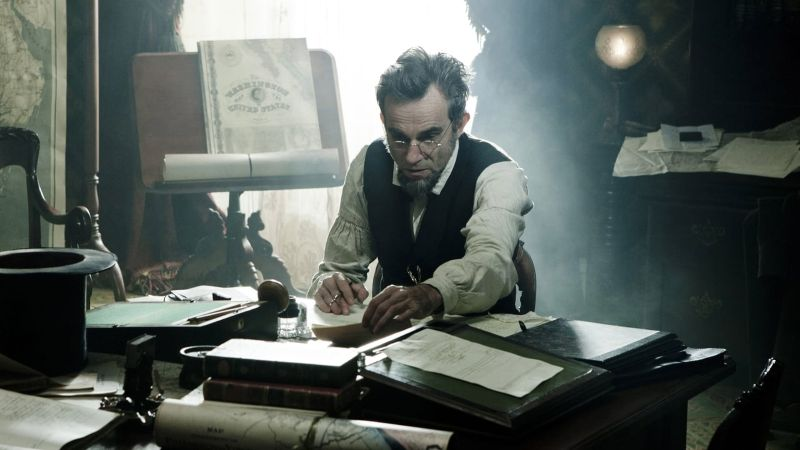
Scooby Doo y los hermanos Boo: Un clásico inolvidable de mi infancia. Si la hubiera visto hoy en día, me había parecido tonta y aburrida. Pero en su momento me encantó. La he visto tantas veces que ya me sé los diálogos de memoria. De hecho recuerdo una pequeña anéctoda de la primera vez que la ví. Pá la había rentado junto con otra película que no recuerdo cual era. Vimos la otra y como ya era muy noche, no nos dejaron ver la de Scooby Doo. Nos mandaron a dormir porque al otro día había escuela. Incluso hasta recerdo la caja en la que venía, el color y todo. Ya ves que la rentar películas nunca te daban la caja original, sino una caja genérica de cartón. Pues al día siguiente yo estuve ansioso todo el tiempo por llegar de la escuela para ver esa película.
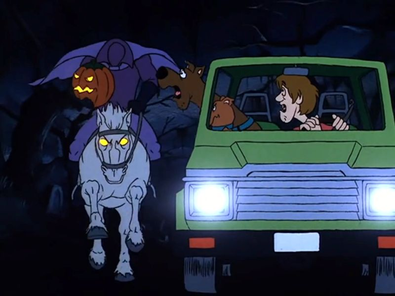
Scream: Aunque no soy fan de las películas de terror, esta me gustó mucho. Tiene un buen balance entre el suspenso y el humor. Ya vi toda la saga pero ninguna me gustó tanto como la primera. Es otra que puedo incluir en mi lista de favoritas.
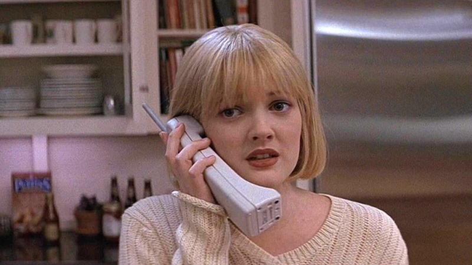
Pondré en un sólo bloque las películas de disney, ya que muchas de ellas marcaron mi infancia y no puedo dejar de considerar muchas de ellas como mis faoritas de todos los tiempos. Las plículas que salieron en los años 90 eran práctimamente una garantía de satisfacción. (con algunas excepciones, claro está). La Sirenita, La bella y la bestia, Aladdin, el Rey León y Hercules son obras maestras de la animación de aquél entonces. Son bastante coloridas, con historias muy entretenidas y con canciones que se quedan en la mente por mucho tiempo. Y no puedo dejar de mencionar también aquellas películas que son muchísimo más viejas pero que también formaron parte de mi infancia temprana. Me refiero a las películas clásicas de Disney como Blancanieves, Cenicienta, Dumbo, Pinocho, Robin Hood, La bella durmiente, La espada en la piedra etc.
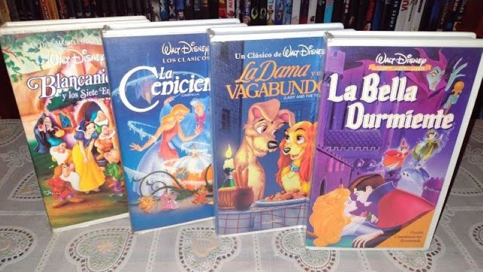
Cambiando de tema, hacia las películas navideñas, también hay algunas que no puedo dejar de ver por lo menos una vez al año. Como las dos primeras de "Mi pobre angelito" (terrible adaptación del nombre original, jejeje), la de Una Navidad con Mickey tambén se ha vuelto una de mis favoritas, y de hecho, me gusta tanto ese cuento de navidad, que me he visto casi todas sus adaptaciónes y hasta algunas parodias. La del Grinch con Jim Carrey me trae muy buenos recuerdos de cuando Paco nos llevaba al cine a Plaza Aragón. El Expresso Polar es un gusto culposo ya que, aunque la animación es un tanto rara, sí me gustó mucho la historia. Y por ultimo, aunque no es una película propiamente navideña, no puedo dejar de mencionar la de El Origen de los Guardianes, esa la vi en el cine y automáticamente cayó entre mi listado de favoritas.
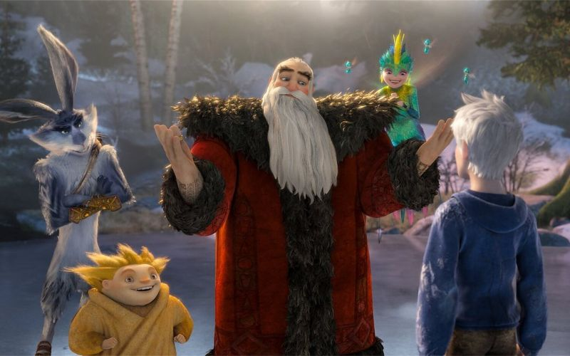
Estoy seguro de que se me deben estar pasando un sin fin de películas que alguna vez he considerado como mis favoritas. Tan recuerda que ya tengo una videoteca de al rededor de 1200 películas, ya casi lleno mi disco duro de 8TB. Pero si me pusiera a enlistarlas todas, esta seción sería interminable. Y aún me falta hablar de las series. Así que hasta aquí dejaré el recuento de películas por el momento. hay muchísimas más que me gustan mucho, pero que no llego a considerar favoritas porque, aunque son un disfrute de ver, no es algo que espero con ansias como todas las que ya te mencioné.
← Volver a Historias